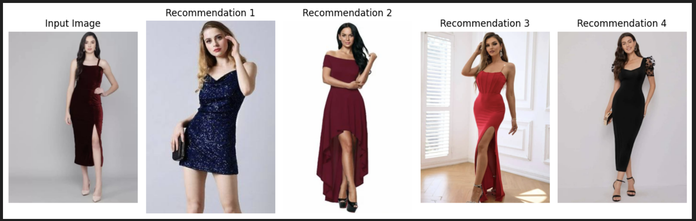

Developed a content-based recommendation system to suggest visually similar fashion items using deep learning.
The system successfully recommends items with similar patterns, colors, and styles. For example, a dark-toned velvet dress retrieves other velvet outfits.
